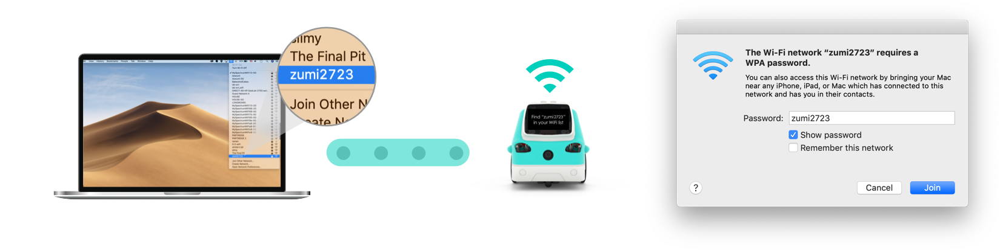
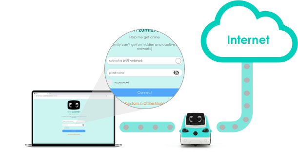

It seems like you're looking for your Zumi's dashboard
You might not be connected to your Zumi. Here's how to connect:
1. Connect to your Zumi's WiFi signal:
Turn on Zumi and once she's booted up, look for her in your device’s WiFi list. The default password is the same as your Zumi’s name. For example: If her name is zumi2723, then the password is zumi2723.
2. Go to the Zumi dashboard:
Go to “zumidashboard.ai” in your browser (we recommend Chrome). If you see the dashboard, then you’ve successfully connected to her.

3. (Recommended) Get Zumi online:
Find your local WiFi in the dropdown list and connect to it by entering in the password.
